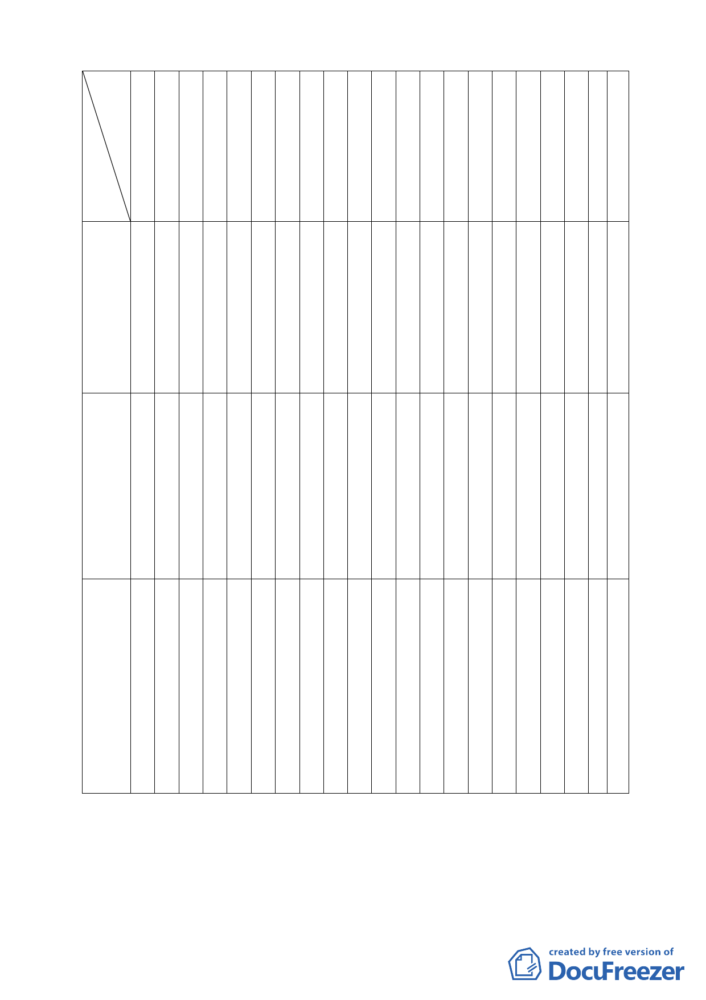

委員
張
委
員
桂
張
委
員
溫
委
員
琇
黃
委
員
書
江
委
員
彥
蘇
委
員
瑛
顏
委
員
愛
邊
委
員
泰
陳
委
員
武
蔡
委
員
淑
錢
委
員
學
孟
委
員
繁
于
委
員
俊
歐
委
員
晉
莊
委
員
武
林
委
員
志
陳
委
員
永
林
委
員
聖
紀
委
員
聰
承
備辦
註人
林樞玲禮霆敏靜明正瑩陶宏明德雄盈仁忠吉
案名
6.臺北
市保護
區變更
為住宅
區地區
都市計
畫通盤
○
檢討主
要計畫
（第一
階段）
案
7.變更
臺北市
信義區
信義段
三小段
五三之
三四地 ○
號人行
步道用
地為道
路用地
計畫
案。
8.變更
台北市
內湖區
內湖路
1 段北
勢湖第
二種工
業區及 ○
新明路
兩側第
三種工
業區為
科技工
業區計
畫案
○※○○○
○○○○
○
○※
○
○○ ○○○※○
○
陳
9
福
位
隆
謝
5
佩
位
砡
陳
9
福
位
隆
一八